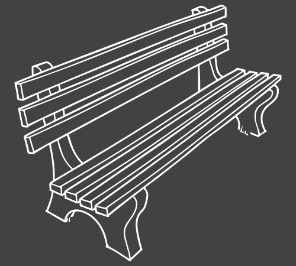
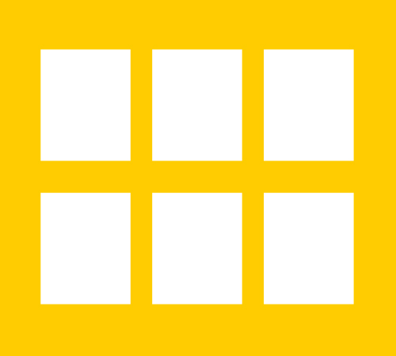
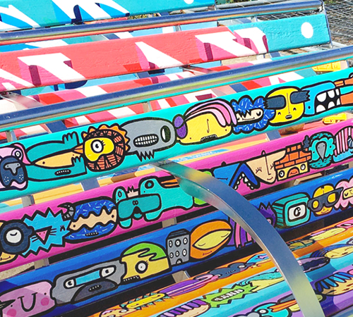

Our Projects
Benchart
BenchArt revitalises park, bus stop and community space benches creating an engaging, permanent trail that brings colour, positivity and joy to practical street furniture that is used by everyone.
The Impact
Bringing colour, culture and vibrancy into the suburbs makes areas like Hangleton and Knoll feel included and part of our creative and positive city culture.
Giving the local community positive, uplifting works of art that can be engaged with on different levels, by the whole community and beyond.
Creating an identity for H&K beyond ‘the suburban’ by creating a trail for people from all areas to explore and enjoy, encouraging fitness, health and wellbeing.
Suggested Locations
We have made some suggested locations for replacing existing, neglected benches in Hangleton and Knoll, that are well used by the community but also suggestions for new bench locations.
MAP HEREThe Process
- 
Create digital bench template and brief for local Artists to download
- Open
Open the submission process, allowing any local artist from any background to submit a design via email / website. Advertise via local resources, TV, Radio, Digital, Social.
- 
Short list submissions and contact Artists, allocating each winner with a bench location
- 
Artists given a deadline for creating their bench ready for collection and Installation. We could also consider artist working on benches in situ.
The Art
We have two suggestions for the transformation of our benches:
- Commissioning local artists from differing disciplines to create a bench in their ‘style’. For example: illustration, fine art, graphic art, street art etc.
- Approaching companies such as ReWorked and Gomi who repurpose unrecyclable consumer waste into new products, creating pieces of art in their own right.
Can you help make it happen
- We are interested in talking to organisations that share our ethos and could provide fundingto get our project up and running.
- We welcome interest from local building or corporate companies or organisations who could offer over arching sponsorship.
- We would love to talk to local businesses of all shapes and sizes, interested in sponsoring individual benches.